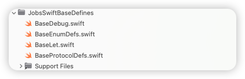
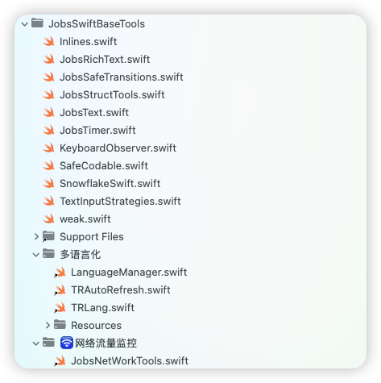

一、*.podspec 模板#
-
普通模板

Pod::Spec.new do |s| s.name = 'JobsSwiftBaseDefines' # Pod 名 s.version = '0.1.4' s.summary = '一些全局的基础定义' s.description = <<-DESC 全局常量/协议定义/结构体/枚举 DESC s.homepage = 'https://github.com/JobsKits/JobsSwiftBaseDefines' s.license = { :type => 'MIT', :file => 'LICENSE' } s.author = { 'Jobs' => 'lg295060456@gmail.com' } s.platform = :ios, '15.0' s.swift_version = '5.0' s.source = { :git => 'https://github.com/JobsKits/JobsSwiftBaseDefines.git', :tag => s.version.to_s } s.source_files = '**/*.swift' s.frameworks = 'UIKit' end -
带子Pod的模版

Pod::Spec.new do |s| s.name = 'JobsSwiftBaseTools' # Pod 名 s.version = '0.1.11' s.summary = 'Swift@基础工具集' s.description = <<-DESC 关于Swift语言下的基础工具集 DESC s.homepage = 'https://github.com/JobsKits/JobsSwiftBaseTools' s.license = { :type => 'MIT', :file => 'LICENSE' } s.author = { 'Jobs' => 'lg295060456@gmail.com' } s.platform = :ios, '15.0' s.swift_version = '5.0' s.source = { :git => 'https://github.com/JobsKits/JobsSwiftBaseTools.git', :tag => s.version.to_s } # 全局排除脚本 / 图标 s.exclude_files = [ 'MacOS/🫘JobsPublishPods.command', 'icon.png', ] # ====================== 根层基础工具（根目录 Swift） ====================== s.source_files = [ 'Inlines.swift', 'JobsRichText.swift', 'JobsSafeTransitions.swift', 'JobsText.swift', 'JobsStructTools.swift', 'JobsTimer.swift', 'KeyboardObserver.swift', 'SafeCodable.swift', 'SnowflakeSwift.swift', 'TextInputStrategies.swift', 'weak.swift' ] # ====================== 系统库依赖：所有代码共享 ====================== s.ios.frameworks = 'UIKit', 'QuartzCore', 'Network', 'CoreTelephony', 'Photos', 'PhotosUI', 'AVFoundation', 'CoreLocation', 'CoreBluetooth', 'UniformTypeIdentifiers' # ====================== 第三方依赖：所有代码共享 ====================== s.dependency 'RxSwift' s.dependency 'RxCocoa' s.dependency 'NSObject+Rx' s.dependency 'SnapKit' s.dependency 'Alamofire' s.dependency 'JobsSwiftBaseDefines' # ====================== 多语言化（中文目录 + Localizable.strings） ====================== s.subspec '多语言化' do |ss| # 多语言化文件夹下的 Swift：LanguageManager / TRAutoRefresh / TRLang 等 ss.source_files = '多语言化/**/*.swift' # 多语言化下的所有 Localizable.strings # 例如： # 多语言化/en.lproj/Localizable.strings # 多语言化/zh-Hans.lproj/Localizable.strings ss.resources = '多语言化/**/*.strings' end # ====================== 网络流量监控（中文目录） ====================== s.subspec '网络流量监控' do |ss| # 目录：网络流量监控/JobsNetWorkTools.swift ss.source_files = '网络流量监控/**/*.swift' end end
二、自检（QSA@Cocoapods）#
命令行操作需要定位于此库路径下
-
自检不一定靠谱。因为自检的时候，可能用的是本地源。在最后推送到远端的时候，也会自检，以此为准
pod lib lint --allow-warnings JobsSwiftBaseTools.podspec
三、推送#
命令行操作需要定位于此库路径下
-
推送到Github，并打对其打tag
git tag 0.1.0 -
注册邮箱会收到一封短信，需要进行点击确认
pod trunk register lg295060456@gmail.com 'Jobs' --description='JobsSwiftBaseTools.podspec' -
自检成功 + 注册邮箱确认短信成功 + 推送到GitHub并打tag（注意版本号对齐） => 发布成功
pod trunk push JobsSwiftBaseTools.podspec --allow-warnings
四、查询#
命令行操作需要定位于此库路径下
pod trunk info JobsSwiftBaseTools五、注意事项#
-
Github和Cocoapods是2套独立的系统。也就意味着，仅仅做了
git push而没有做pod trunk push是不行的（当然可以用Github的工作流来解决）- 如果在Github上单方面的修改了Tag（常见操作是合并Tag，或者删除Tag）那么
pod trunk push将会找不到这个Tag导致失败
- 如果在Github上单方面的修改了Tag（常见操作是合并Tag，或者删除Tag）那么
-
如果在Cocoapods有一个和目前版本相同的版本，则推不上去
-
有些时候CND没有来得及同步，拉不了最新的版本，需要添加官方源进行处理
source 'https://github.com/CocoaPods/Specs.git' -
拉不到最新库，需要进行更新
pod install --repo-update -
如果因为缓存出现紊乱，还原Pods
删除文件📃
Podfile.lock删除文件📃
*.xcworkspace删除文件夹📁
Podspod deintegrate -
作者无法主动删除自己发布的Cocoapods
-
废弃并非删除
pod trunk deprecate JobsSwiftBaseTools pod trunk deprecate JobsSwiftBaseTools 0.1.0 # 废弃掉某个指定的版本 -
真实删除（从 Specs 仓库抹掉）一般只有严重法律问题、安全问题之类，才会由 Cocoapods 官方手工处理，作者自己是做不到的。
-